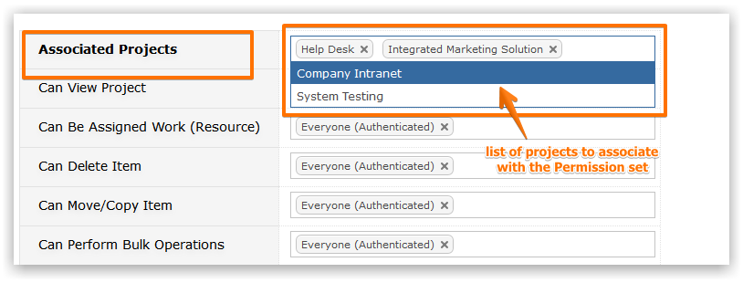
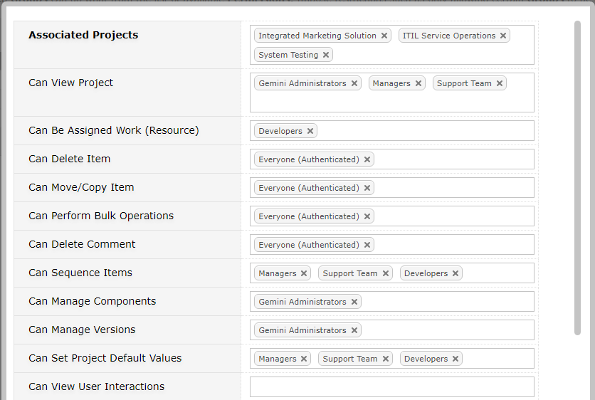

When editing a permision set you can also select the projects that receive the permissions.

NoteYou can also select a Permission set from the Projects screen.
Select which user groups receive which permissions.

The following table details all available roles.
| Permission | Description |
|---|---|
| Can View Project | The most basic permission, without this a user cannot see the project at all |
| Can Be Assigned Work (Resource) | User can be assigned as a 'Resource' to an item. If a user does not have this permission they will not appear in a drop-down list of Resources though they can still be selected through a Custom field of type 'User Picker'. |
| Can Delete Item | User can delete any item provided the action does not break data integrity rules |
| Can Move/Copy Item | User can move items between projects and can create new items |
| Can Perform Bulk Operations | User have access to the Bulk Update tool which can change field values on multiple items simultaneously. This also allows for use of the Import Wizard. |
| Can Delete Comment | User can delete any comment |
| Can Sequence Items | User are allowed access to the Sequencing grab handles that allow project-wide ordering of items on the Grid |
| Can Manage Components | User can create and amend Project Components in the Project Settings menu |
| Can Manage Versions | User can create and amend Project Versions in the Project Settings menu |
| Can Set Project Default Values | User can define default values for the fields that the project uses on the Project Settings, which will be applied when items are created. |
| Can Only Delete Own Comment | User can only delete their own comments (User can always edit their own comments) |
| Can Only View Own Items | User can only see items they created or which are assigned to them (usually given to external User) |
| Can Only View Own Organization Items | Users can only see items they have created or users within their Organization have created |
| Can Only Amend Own Items | User can only amend items they have created |
| Can Only Delete Own Items | User can only delete items they have created provided the action does not break data integrity rules |
| Read Only Access | Users can only view items, all creation and editing permissions are revoked. This restrictive permission overrides all other permissions |
The following video will help provide an overview of permisions within Gemini. For a quick reference to permisions, please start the video from the 4:00 minute mark.